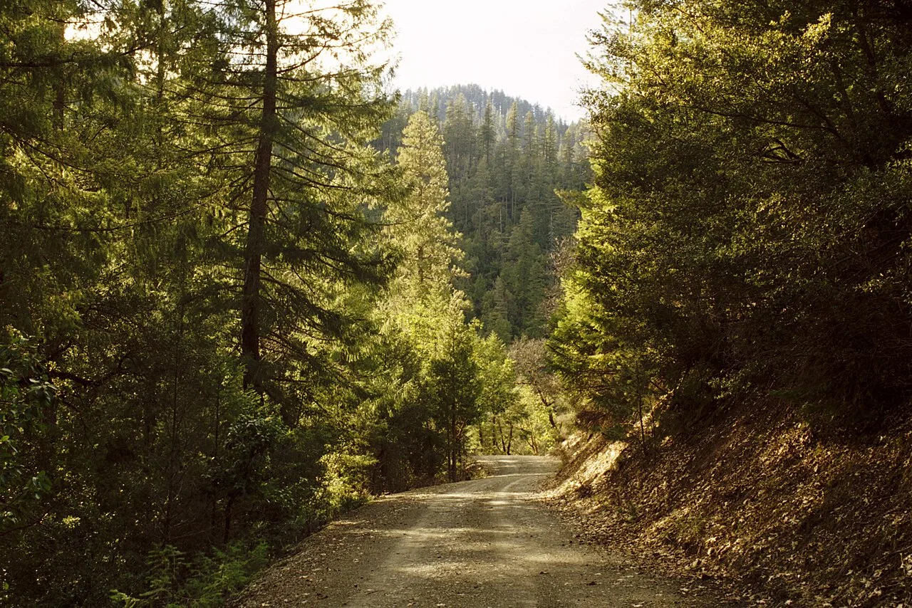
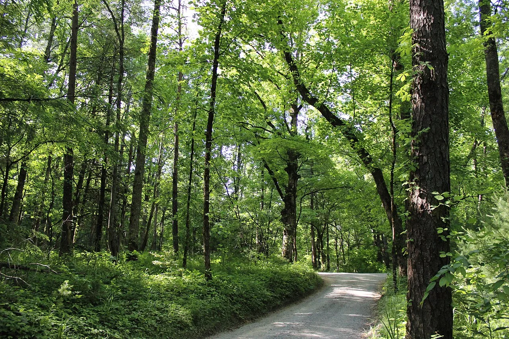
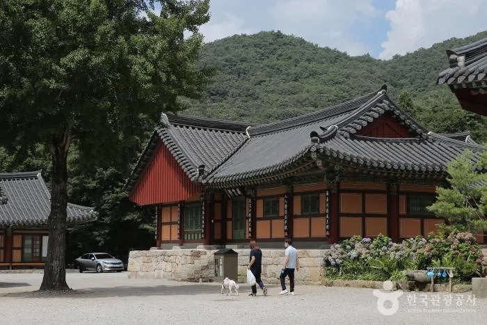

▲ 산자락으로 이어지는 좁은 길. 벌초철에는 이런 길 끝에서 차를 돌릴 자리를 찾는 일이 문제가 된다 ⓒ 한국관광공사
1. 임도 1만 6,425km가 열린다
산림청은 벌초와 성묘를 위해 산림 내 임도를 한시적으로 개방합니다. 개방 연장은 해에 따라 1만 6,425km로 발표된 적도 있고, 국유림관리소 27개소 9,095km와 지방자치단체 226곳 17,690km를 합쳐 안내한 해도 있습니다.
즉 "매년 같은 길이 열린다"고 생각하면 안 됩니다. 개방 구간과 기간이 해마다 다시 정해집니다. 어느 해에는 9월 27일부터 10월 18일까지로 기간이 공지됐습니다.
제외되는 구간도 있습니다. 무단벌채와 토석류 채취 위험이 높은 곳은 열지 않습니다. 그리고 여름 호우로 지반이 약해진 임도는 개방 대상에서 빠진 사례가 있습니다.
그래서 출발 전에 확인할 것은 하나입니다. "올해 그 산의 임도가 열렸는가"입니다. 관할 국유림관리소나 시·군 산림 부서에 물어보는 것이 가장 확실합니다.
여기서 오해가 생깁니다. "임도가 개방됐다"는 말은 통행이 허용됐다는 뜻이지, 승용차가 다닐 만한 길이 됐다는 뜻이 아닙니다.
2. 임도는 도로가 아니다
임도는 산림 관리와 작업을 위해 낸 길입니다. 목재를 실어 나르고 산불 진화 차량이 접근하는 용도로 설계됐습니다. 일반 승용차의 통행은 애초에 전제가 아닙니다.
노면은 대부분 비포장입니다. 자갈과 흙이 섞여 있고, 비가 오면 패입니다. 경사 구간에는 물길을 돌리기 위한 횡배수구가 가로질러 있는데, 이 턱이 승용차 하부에 그대로 닿습니다.

▲ 참고 이미지 — 전형적인 비포장 임도. 노면에 자갈이 깔려 있고 한쪽은 절개면, 반대쪽은 사면이다 ⓒ Wikimedia Commons
낙석과 나뭇가지도 변수입니다. 태풍이 지나간 뒤라면 길 위에 부러진 가지가 널려 있습니다. 차체 측면 긁힘은 흔한 일이고, 타이어 측면이 돌에 찢어지면 그 자리에서 움직일 수 없게 됩니다.
3. 승용차가 다치는 자리
| 부위 | 원인 |
|---|---|
| 하부 · 언더커버 | 횡배수구 턱, 노면 돌출 |
| 프런트 범퍼 하단 | 진입 각도 부족(오르막 시작 지점) |
| 타이어 측면 | 돌에 쓸림 — 수리 불가, 교체만 가능 |
| 사이드미러 · 도어 | 좁은 길에서 나뭇가지 |
| 배기 · 촉매 | 마른 풀 위 정차 시 발화 위험 |
타이어 측면 손상은 특히 곤란합니다. 트레드(접지면)의 못은 때워서 쓸 수 있지만, 측면은 수리 대상이 아닙니다. 산속에서 이 상황이 되면 스페어타이어가 없는 차는 견인을 불러야 합니다.
마지막 항목도 중요합니다. 배기계는 매우 뜨겁습니다. 마른 풀 위에 차를 세워 두면 그 열로 불이 날 수 있습니다. 벌초철이 산불 위험이 높은 시기와 겹치는 이유 가운데 하나입니다.
4. 진짜 문제는 돌아 나올 자리
산길에서 가장 흔한 곤란은 고장이 아니라 회차입니다. 올라가는 것은 되는데 돌릴 자리가 없는 상황입니다.
임도는 폭이 좁습니다. 차 한 대가 지나갈 정도인 구간이 많고, 한쪽은 산비탈, 반대쪽은 낭떠러지인 경우도 있습니다. 이런 길에서 막다른 곳을 만나면 후진으로 수백 미터를 내려와야 합니다.

▲ 참고 이미지 — 차 한 대 폭의 임도. 이런 길에서 막다른 곳을 만나면 후진 외에 방법이 없다 ⓒ Wikimedia Commons
여기에 마주 오는 차까지 겹치면 상황이 복잡해집니다. 벌초철에는 같은 산에 여러 집안이 동시에 올라갑니다. 좁은 길에서 두 대가 마주치면 한쪽이 후진해야 하는데, 대개 뒤에 여유 공간이 있는 쪽이 양보하게 됩니다.
실전 요령은 단순합니다. 올라가면서 차를 돌릴 수 있는 넓은 자리를 미리 봐 두는 것입니다. 그리고 그 지점을 넘어가야 할지 판단이 서지 않으면, 거기까지만 가고 걷는 편이 낫습니다.
5. 어디에 세울 것인가
좁은 길 갓길 주차는 통행 자체를 막습니다. 벌초철에는 뒤이어 올라오는 차가 계속 있습니다. 소방차나 응급차의 진입로가 되기도 합니다.

▲ 산 초입의 넓은 공간에 차를 두고 걷는 편이 결과적으로 빠른 경우가 많다 ⓒ 한국관광공사
현실적인 기준은 이렇습니다. 산 초입 마을이나 주차 가능한 공터에 차를 두고, 짐은 나눠 들고 걷는 방식입니다. 왕복 20~30분이 더 걸려도 차를 다치지 않고 회차 걱정도 없습니다.
차를 세울 때는 마른 풀을 피하십시오. 배기계 열이 그대로 전달됩니다.
6. 차에서 내린 뒤가 더 위험하다
첫째, 벌 쏘임입니다. 작업 전에 주변에 벌집이 있는지 확인해야 합니다. 밝은색 긴소매 옷을 입고, 향이 강한 화장품이나 스프레이는 피하는 것이 좋습니다.
둘째, 뱀입니다. 풀숲에 손을 넣기 전에 도구로 먼저 헤쳐 보는 습관이 필요합니다.
셋째, 예초기입니다. 보호 안경, 목이 긴 장화, 무릎 보호대, 마스크를 갖추라는 것이 정부의 권고입니다. 예초기 날에 튄 돌이 눈으로 들어오는 사고가 매년 반복됩니다.
넷째, 산불입니다. 고온 건조한 날씨에는 작은 불씨도 번집니다. 차량 배기계, 담배, 예초기 마찰열이 모두 발화 원인이 될 수 있습니다.
정리하면 이렇습니다. 벌초길에서 가장 자주 후회하는 순간은 "조금만 더 올라가 볼까"라고 판단한 지점입니다. 임도가 열렸다는 것은 갈 수 있다는 뜻이지, 내 차로 갈 수 있다는 뜻이 아닙니다.